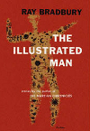

What this page
is trying to do
is play around
with link
placement
and spacing

Bradbury-1951
What this page
is trying to do
is play around
with link
placement
and spacing
The evolution of book covers is a topic that has always interested me, probably because I organize all my books by size and then by binding colors. Also, it's enjoyable to collect books by the same author when there is a theme running through their book designs. You're left to discover their "evolution", or lack thereof. For instance, the current printed edition of Haruki Murakami's books all have the same abstract design, but do these covers themselves contain any growth of ideas over time?
It got me thinking about the history of book design. The cover design of Murakami's earlier books fit more into the greater standard of the era rather than any personal theme. Here on the left we have three books that span more than three decades, yet their designs fit into the same mold. It has inklings of even marketing strategies found back as far as the 1920's. Perhaps this was a byproduct of limitations within the printing industry. It could have also been a result of exposure. People just weren't exposed to these things as frequently as we are, so publishers could employ the same strategies over a greater time period. But is this opinion just a misconception on my part? Contemporarily printed books fit much better together on my bookshelf than older ones do, so maybe I'm just more used to their subtleties, and they really are more similar than I'd like to admit.